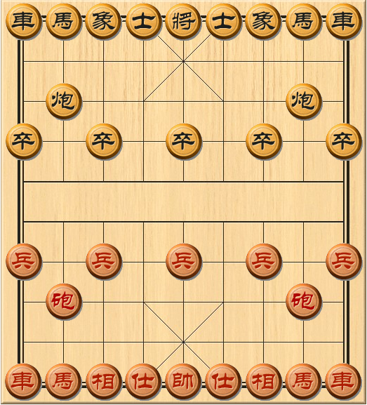
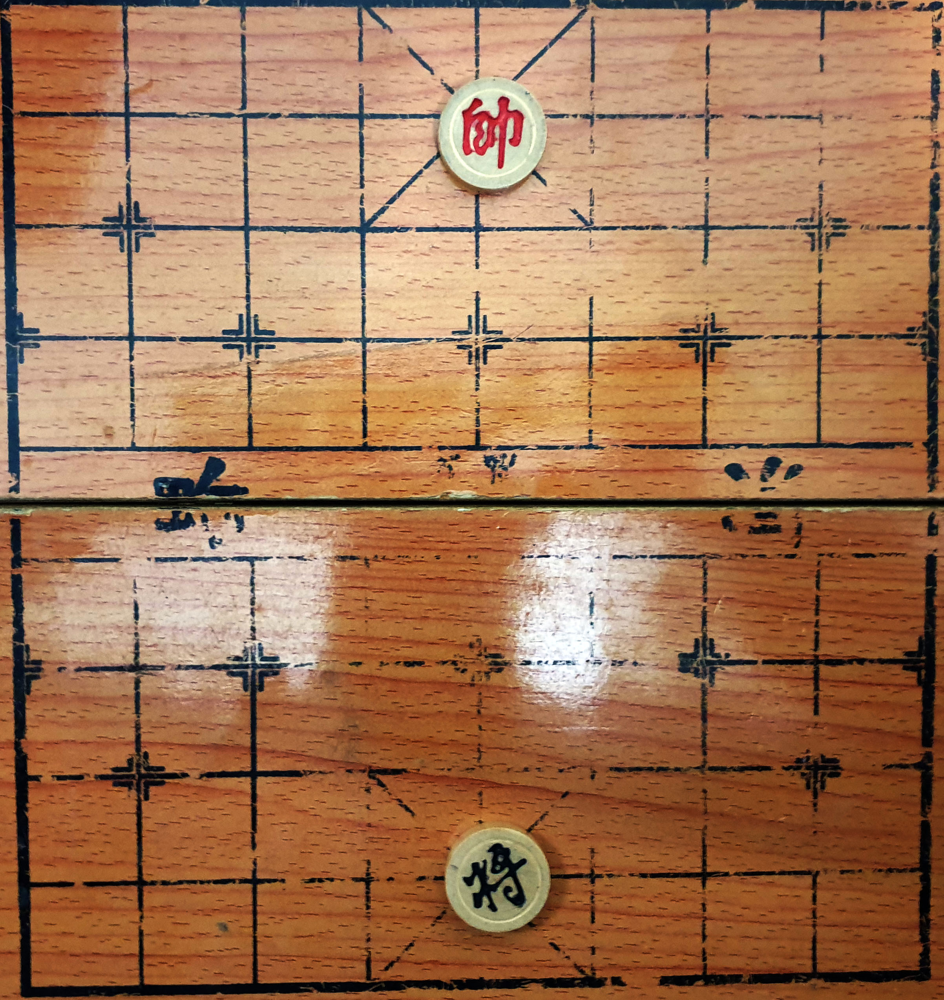
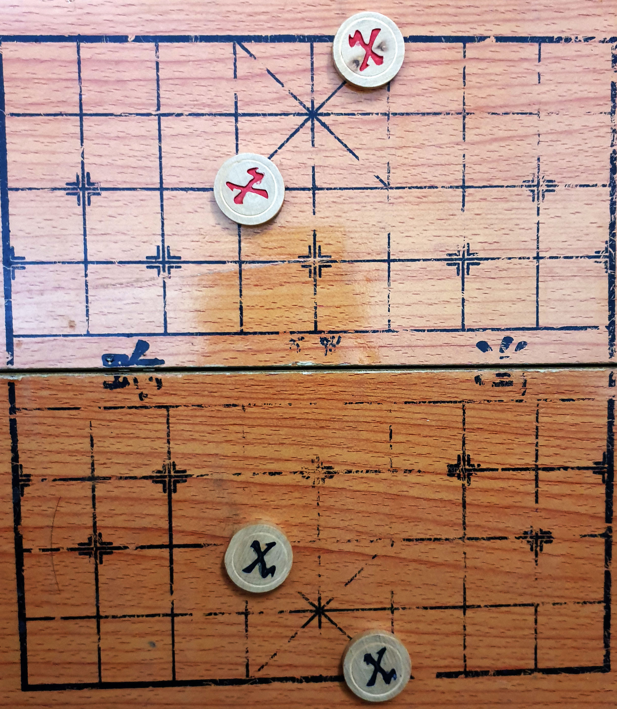
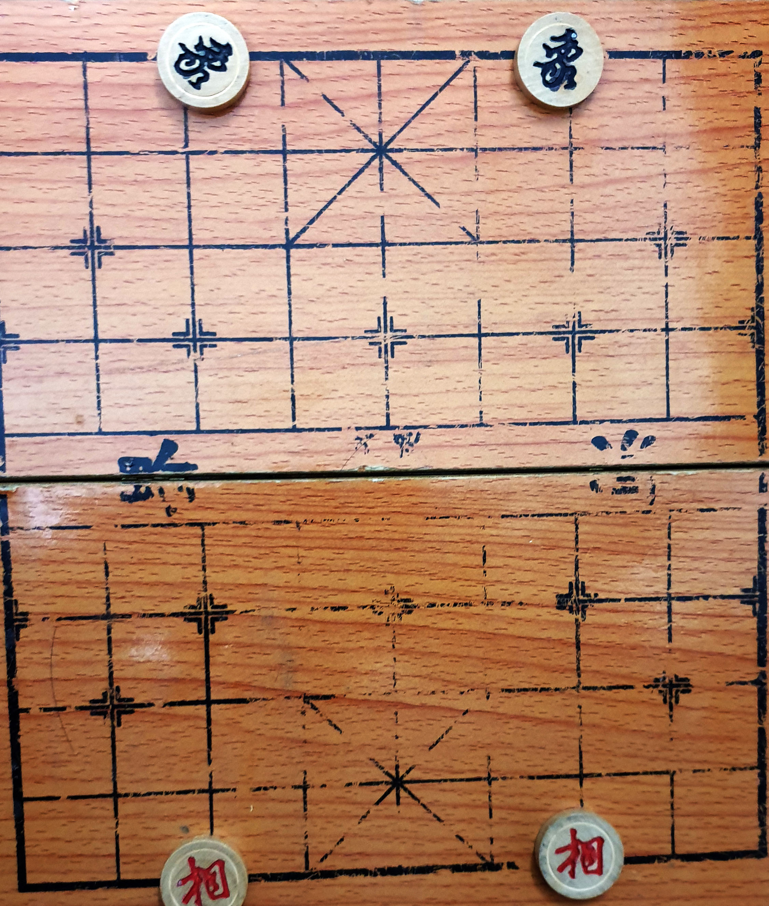
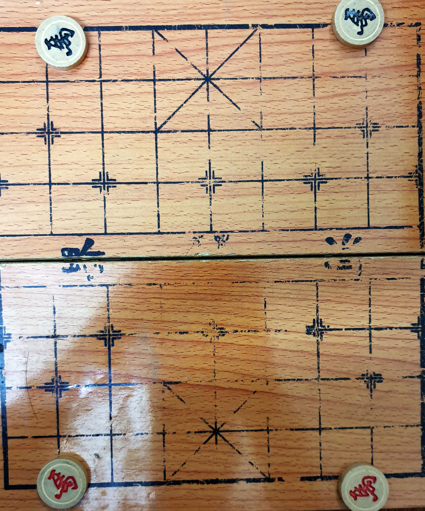
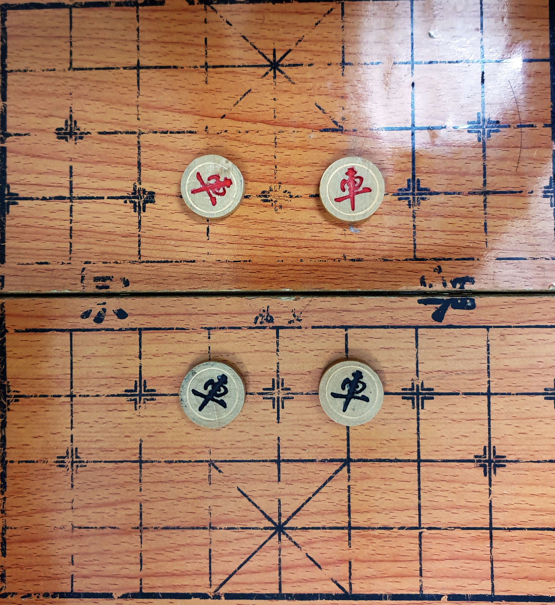
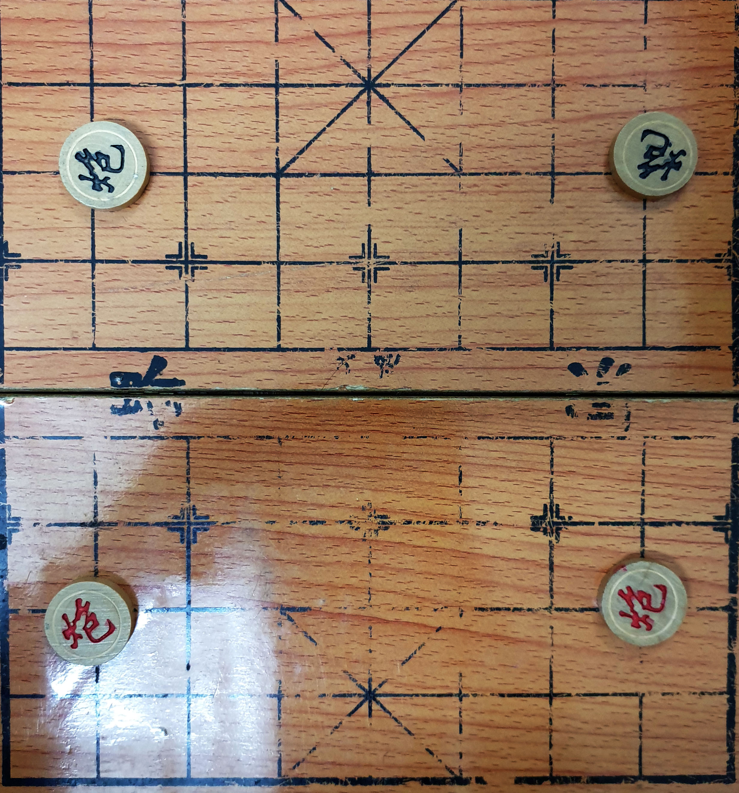
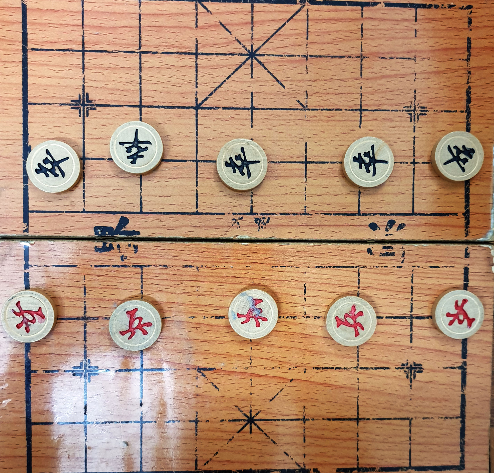

Rules for International Chess
Step 1: Setting up the board

When setting up the board, make sure that all pieces are placed correctly according to the picture above. Here are some basic information before starting the games.
1. The pieces are placed on the line intersections.
2. The small squares that contains diagonal lines on the both side are known as red and black palace.
3. In the middle of the board, seperating you and your opponent by two thick horizontal line is named "river".
Step 2: How does each of the pieces move
Most of the pieces movement is follow by a few simple rules.
- Red pieces will be the first one to move, this decision is made by flipping a coin.
- Pieces cannot move to it destination if it is block by another piece.
- Pieces cannot move to a line intersections which is already been occupied by your own piece.
- If you move your piece to a line intersections that is occupy by your enemy pieces, you will capturing the piece by replacing your piece with their piece.
- All pieces have different ways of moving around the board, if the player move the pieces not following the rules, it will be consider a illegal move and you will be penalty.
King (General)
The king is the most important piece among all the pieces as if this piece is been captured, you will lose and game ends. Even though, the king is the most important piece, it is also the least powerful one because of the way that the piece can move and the limitation of space to move around.

The king can only move one space vertically or horizontally only and it cannot move out of its palace. The king also cannot move diagonally too. As same as international chess, the king cannot move to a spot where he will be checked (an enemy piece can capture him) and the king have to always move away from being checked, or else you will lose.
Guard (Advisor)
The guard has important role which is to only guard and protect the king safety. The guard could be good in defense as it can attack diagonally.

The guard can only move one space diagonally and same like the king, they are not allowed to leave the palace. Because of that factor, the possible position for a guard will be limited to 5 only, which is only within the palace area.
Bishop (Elephant)
Unlike the international chess, this bishop is not as strong as the others one but this piece is also a really good defender from all sort of attack. Elephant is the pieces original name, and because of that, this pieces is unable to cross over to the enemy territory as this piece cannot cross a river.

This unique piece has his own unique way of moving. Elephants can move exactly two spaces diagonally and like previously mentioned, they cannot cross the river. If there is a piece placing one space diagonally infront of the elephants, they will be not able to move 2 spaces diagonally toward the piece that blocking it's way.
Knight (Horse)
The knight or the horse still remains as the interesting piece among the pieces, but here the horse is more interesting. Coordinate your knight will other pieces will allow you to be more aggressive or even defensive.

A knight moves two spaces vertically or horizonally, followed by one space outward-diagonally. Unlike the chess version of knight, this horse will not be able to jump over pieces as a result blocking them. To block a horse piece, the piece have to be directly infront of the horse piece, and this will prevent the horse from moving toward the direction of the blocking pieces, but other direction will still be a legal move.
Rook (Chariot)
The rooks are quite important as the rook used to protect others piece. A rook can also really easily cover a rank(horizontal row) or a file(vertical row).

The rook is able to move as far as it wants, but only horizontally and vertically but not diagonally.
Cannon
The cannon piece is really unique as the way it attack other pieces.

The cannon move exactly the same as the rook, but the way it can capture a piece is totally different. To capture a piece, it must be done by hoping over one another piece, either your own piece or opponent's piece. It can only hope one , but not two or more pieces, and can only hope one piece to capture an opponent's piece.
Pawn (Soldier)
There are only five pawn pieces within the chinese chess game. Similiar, the pawn is the weakest piece among all the other piece.

Pawns can only move forward one space, capturing other unit will be the same way too, never diagonally. But once the pawns has crosses the river, the pawns will be able to move forward one space horizontally or vertically. Unlike in international chess, when the pawn reaches to the end of the board, it will not be able to promote, but rather will be able to move horizontal only.
Others rules:
There are some others rules to keep in mind.
- A game is won by either checkmating or stalemating the opponent's king. This is different compare to the international chess where stalemating the king will be a draw not a win.
- Perpetual check or perpetual chasing of a unprotected enemy piece is forbidden. A player cannot check opponent's king more then three times in a row with the same piece on the same spot. At the same time, the player also cannot perpetual attack the same enemy piece (which is unprotected)
- The kings cannot face each other on the same column where the column does not contain any piece.There must be a piece between them on the same column.
References: Learn how to play chinese chess
Regulation for Interational Chess
There are some regulation that every player have to follow, all of these regulation is recommended to follow even during pratice matches to allow player to remember all these regulation and adapt to follow these regulation whenever possible.
Here are all the regulation you have to followed:
Touch Move Rule
Touch and move rule is also applied in chinese chess and So basically, if a player touches their own pieces, then he must move that and the only piece. If player touches an opponent piece, the player must capture it . If the player uses his own piece and touches the enemy piece, the player have to use the piece that is touched, and must capture that piece.
Time and clocks
The time for each individual move from each player will be recorded and the player have to finish a movement before the time ends, or else he will lose the game. The player can use more or less time on each individual move, but recommended to use time wisely to prevent time to ran out.
No perpetual check or chase
Perpetual check or chase is often done by a player when the player does not have any other available move that can benefits them. In international chess, perpetual check or chase is often used to draw the game, but in chinese chess, the rules made it harder. Only under certain cases, the game can only be draw, or else, the player who done a perpetual will often be consider as a lost.
References: Chinese chess rules